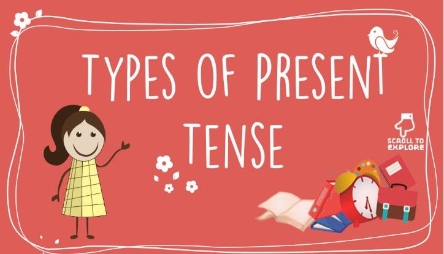
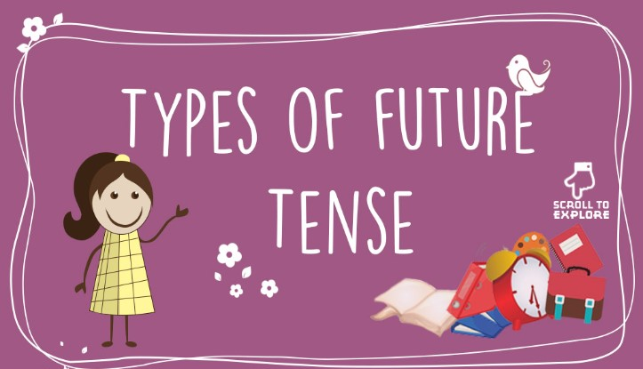

LEARN ENGLISH
Home
English Tenses
English tenses
The term tense is derived from Latin word ‘Tempus” meaning time.
Tense is used to indicate time in English language.
It has been broadly classified into three groups – Present Tense, Past Tense and Future Tense.


PAST TENSE
X
SIMPLE PAST
Describes an action that already completed.
Can be used with or without adverbs of time.
Examples:
I
went
to egypt in 1999.
He
drank
his whiskey almost bottums up.
PAST CONTINUOUS
Describes presistent habits of the past.
Express uncompleted action of the past
Examples:
They
were
always
quarrelling.
Everyone
was
Shouting
PAST PERFECT
Describes a completed action of the past that happened before another event took place.
Examples:
After he
had finished
his homework, he went outside to play.
PAST PERFECT CONTINUOUS
Describes an action in the past that began before a certain point in the past and continued up until that time.
Examples:
She
had been working
at that company for three years when it went out of business.
PRESENT TENSE
X
SIMPLE PRESENT
Express habits or general truth.
Describe a future event as part of a plan or arrangement.
Examples:
I
am
nineteen years old.
The plane
arrives
at 18.00 tomorrow.
PRESENT CONTINUOUS
Describe action going on at the time of speaking
Express temporary action which may not be happening at the time of speaking.
Examples:
They
are swimming
in the pool.
John
is driving
his father's car while his own car is in the garage.
PRESENT PERFECT
Express past action which is not defined by a time of occurrence.
Express an action which started in the past and has continued up until now.
Examples:
Teresa isn't at home. I think she
has gone
shopping.
She
has worked
in the bank for five years.
PRESENT PERFECT CONTINUOUS
Express an action which started at some point in the past and may not be complete.
Examples:
He
has been living
in Bankok since he left school.
PRESENT TENSE
X
SIMPLE FUTURE
Express an action or circumstance which hasn't taken place yet.
Examples:
I
will eat
Japanese Food tomorrow.
FUTURE CONTINUOUS
Express what will be going on at some time in the future.
Express planned events.
Examples:
You
will be missing
the sunshine once you're back in England.
This time next week I
will be sun bathing
in Bail.
FUTURE PERFECT
Express an action that will be complete before another event takes place.
Examples:
By the time I finish this course, I
will have taken
ten tests.
FUTURE PERFECT CONTINUOUS
Describe an action that will have happened for some time and will not be complete yet at a certain point in the future.
Examples:
I
will have been watching TV
for 3 hours when you arrive.